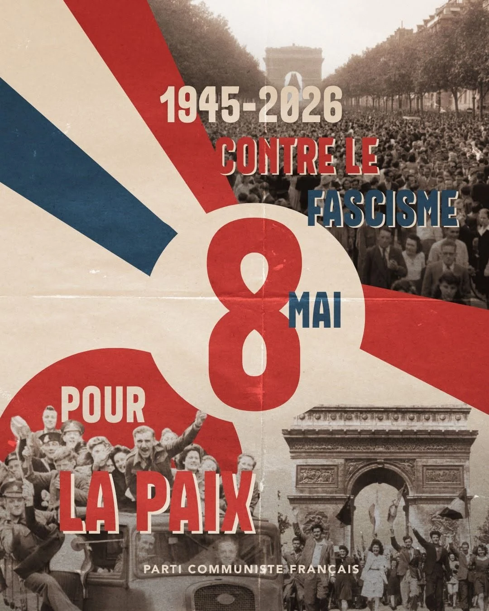

Publication relayée par le PCF 79
Le PCF commémore la victoire sur le nazisme du 8 mai 1945
Date de mise à jour indiquée par Facebook · 8 mai 2026
Texte de la publication · PCF national
🇫🇷 Le 8 mai 1945, au terme du conflit le plus sanglant que l'Humanité ait jamais connu, les alliés remportaient une victoire totale sur la barbarie nazie et le fascisme. L'Allemagne hitlérienne capitulait sans condition.
Cette victoire est l'oeuvre des peuples, combattants soviétiques tombés sur le front de l'Est, GI fauchés sur les plages normandes, forces françaises libres engagées en Afrique et en Libye. Elle est aussi celle de dizaines de milliers de résistantes et de résistants français, parmi eux de très nombreux communistes engagés pour la France, pour la liberté, le progrès social et la Paix.
🚩 Commémorer le 8 mai, ce n’est pas regarder un passé figé. C’est faire vivre l’héritage de la Résistance : défendre la paix, défendre un projet de société émancipateur, combattre les idées de haine et refuser la banalisation de l’extrême droite.
En ce 8 mai 2026, les communistes n'oublient pas les sacrifices consentis par les peuples et les leçons de l'Histoire et continuent de porter l'exigence de solidarité, de justice sociale et de fraternité entre les peuples, seul rempart véritable contre la haine barbare et l'impérialisme guerrier.

Sources
PCF national · publication relayée par le PCF 79 · bibliothèque Facebook · AR-0002-FB-00779
À lire aussi · Le 8 Mai à Niort en images